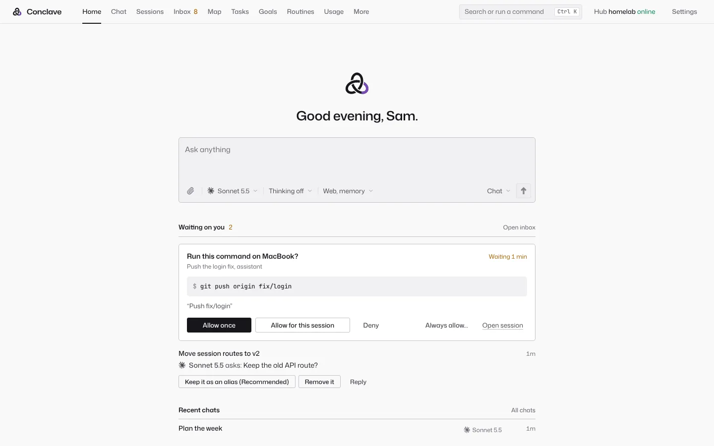

Latest release
A self-hosted agent harness for every computer you own.
Conclave runs its own coding agent loop with any model, and Claude Code, Codex, Gemini CLI and OpenCode in the same transcript. Agents work on your PC, Mac or server. You answer their approvals from your phone.
Open source, AGPL-3.0. Hub on Docker, Proxmox, Linux or macOS. Apps for Windows, Mac, Linux and Android.

Works with
- Anthropic
- OpenAI
- Gemini
- Z.ai GLM
- OpenRouter
- DeepSeek
- Kimi
- Qwen
- Ollama
- LM Studio
- any OpenAI-compatible API
- Claude Code
- Codex
- Gemini CLI
- OpenCode
What makes it different
Each line links to the part of the design log that says how it works and where it can fail.
Its own harness
- Agent loop for any model. File, shell, search and web tools, permission rules, hooks, skills and subagents, rebuilt from Claude Code's public design.
- Compaction and prompt caching. A byte-stable system prompt, cache breakpoints, and a checked summary at 80% of the context window.
- Verify gate. After a turn that edits files, the project's check runs on that computer. A failure sends the agent back, up to 3 times.
- Vendor CLIs over ACP. Claude Code, Codex, Gemini CLI and OpenCode run as engines and write into the same transcript as any other model.
Several models on one problem
- Second opinion. Send any reply to another model and read its answer in line.
- Jury. Several models answer, then a judge decides. Juror names can be hidden from the judge.
- Debate. Two models argue for a set number of rounds, and a judge concludes.
- Loop. Keep going until a command such as
bun testpasses, up to a set number of tries.
Long runs that hold up
- File conflict warnings. A write to a file another live session changed in the last 10 minutes tells the agent and alerts you.
- Stuck detection. A turn with no progress for 5 minutes raises an alert with Stop and Keep waiting.
- Usage-limit failover. At a limit, the same model goes on with your next plan or key, then the next model on your fallback list.
- Workflows. Scripts run in sandboxed QuickJS with no file system or network. A resume replays finished agent calls from a journal.
- Routines that catch up. A run missed while the hub was down runs when it is back, up to 6 hours late.
A hub, not a single terminal
- Plans you already pay for. Sign in with Claude, ChatGPT, Google, Grok, Kimi and Muse plans through a pinned, checksum-checked CLIProxyAPI, and with GitHub Copilot and Kiro plans through its plugins (new; live sign-in not yet verified).
- Devices dial out. Each computer connects out to the hub, so no port opens on it.
- Approvals from your phone. Risky calls wait for Allow or Deny, in the app or on the notification.
- Several people on one hub. Each member has their own sessions, memory, keys and devices.
- Shared memory. Every model and device reads one memory, mirrored to Basic Memory notes.
- Automatic updates. Signed releases install themselves when no session is running.
- File outputs. A session hands you a PDF, image or zip as a file card with a Download button.
Compare with Hermes Agent, Cline, OpenCode, Codex and OpenHands
What you can do
-
Chat with any model
Claude, GPT, Gemini or a local model. Switch any time, or ask a second model for its opinion.
-
Code on your computers
Agents edit, test and commit on your PC or Mac. Claude Code and Codex run here too.
-
Approve from your phone
Risky steps wait for your OK. Tap Allow or Deny from anywhere.
-
One memory
Every model and device shares what it learned about you and your projects.
-
Routines that run themselves
Morning briefs, server checks, or a daily look for new listings on a site you care about.
-
Bring your people
Invite family or friends to your hub with their own accounts, or send a chat to a friend's hub.
See it


How it works
-
Install the hub
On a home server, a Proxmox box, or your own desktop with one click.
-
Add your models
Paste API keys, or sign in with the Claude, ChatGPT or Google plan you already have.
-
Use it anywhere
Open it in a browser, the desktop app, the Android app or the terminal.
Why your own hub
-
Private
There is no Conclave cloud. Your chats, code, memory and keys stay on your hub, and model calls go straight to the provider you pick.
-
No lock-in
Use any provider, switch any time, or run models locally.
-
You stay in control
Agents ask before risky commands, and every action goes in an audit log.
Download
The latest release. Get the app for each device, and run the hub on a computer that stays on. Every file has a .sha256 next to it.
Get the app
- On first launch, enter your hub's address and a pairing code from its Devices page. With no server, choose Run the hub on this computer, and the app runs the hub itself while the computer is on.
- The desktop apps are not signed yet. On a Mac, right click the app and choose Open the first time. On Windows, choose More info, then Run anyway.
- On Android, open the
.apkand allow installs from your browser when asked. Then scan the code. - On an iPhone, open your hub in Safari, then choose Share, then Add to Home Screen. It works like an app, with its own login and notifications.
Set up the hub
On a home server or any computer that stays on. It keeps every chat, the memory, the scheduler and your keys, and serves the web app.
Docker
Get the Compose file and start the hub:
mkdir conclave && cd conclave
curl -fsSLO https://github.com/default-cybe/conclave/releases/latest/download/docker-compose.yml
docker compose up -dThen print your login link:
docker compose exec hub conclave remoteProxmox container
On the Proxmox VE host, as root:
curl -fsSLO https://github.com/default-cybe/conclave/releases/latest/download/conclave-lxc.sh
sh conclave-lxc.shIt makes an unprivileged Debian container, installs the hub as a service and prints its address. Add --dry-run to see every command first.
Linux and macOS
The script picks the right file for your system and checks it:
curl -fsSL https://github.com/default-cybe/conclave/releases/latest/download/install.sh | sh
conclave serveThe same install gives you the terminal app and the device program.
All files and other ways
The desktop app
- Windows installer Conclave-windows-x64-setup.exe
- Windows MSI package Conclave-windows-x64.msi
- macOS, Apple silicon Conclave-mac-apple-silicon.dmg
- macOS, Intel Conclave-mac-intel.dmg
- Linux AppImage Conclave-linux-x64.AppImage
- Debian and Ubuntu Conclave-linux-amd64.deb
- Fedora and openSUSE Conclave-linux-x86_64.rpm
- Android app conclave-android.apk
The AppImage needs FUSE 2. Make it executable with chmod +x, then run it.
The hub and terminal app, by hand
- Linux x64 conclave-linux-x64.tar.gz
- Linux x64, older CPUs conclave-linux-x64-baseline.tar.gz
- Linux ARM64 conclave-linux-arm64.tar.gz
- macOS, Apple silicon conclave-darwin-arm64.tar.gz
- macOS, Intel conclave-darwin-x64.tar.gz
- Windows x64 conclave-windows-x64.zip
The device program alone
For a computer that should only lend its files and tools to the hub, with no app. About 5 MB. Pair it with a code from the hub's Devices page.
- Linux x64 conclave-daemon-x86_64-unknown-linux-gnu
- Linux ARM64 conclave-daemon-aarch64-unknown-linux-gnu
- macOS, Apple silicon conclave-daemon-aarch64-apple-darwin
- macOS, Intel conclave-daemon-x86_64-apple-darwin
- Windows x64 conclave-daemon-x86_64-pc-windows-msvc.exe
Then, for example on Linux:
install -m 755 conclave-daemon-x86_64-unknown-linux-gnu ~/.local/bin/conclave-daemon
conclave-daemon pair --hub https://hub.example.com --code ABCD-EFGH
conclave-daemon installDocker without Compose
docker run -d --name conclave --restart unless-stopped \
-p 127.0.0.1:7717:7717 -v conclave-data:/data \
ghcr.io/default-cybe/conclave:latest
docker exec conclave conclave remoteThe port answers this computer only. To reach the hub from other devices, turn on remote access in Settings, or publish 7717:7717 for your network.
Another LXC container or a VM
Debian 12 or 13, or Ubuntu 24.04, as root inside it:
curl -fsSLO https://github.com/default-cybe/conclave/releases/latest/download/setup.sh
sh setup.sh